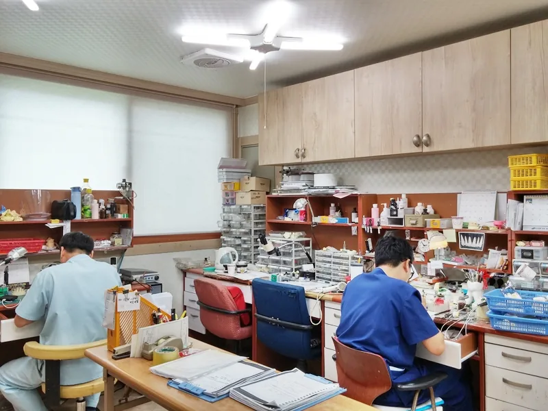

01
2층 · 임플란트 · 심미보철 · 치주
촬영부터 회복까지
한 층에서
CT를 찍은 뒤 층을 옮기지 않고 수술실로 가고, 수술이 끝나면 같은 층 회복실에서 쉬었다 가십니다.
이 층에진료실 · 상담실 · 수술실 두 곳 · CT실 · 회복실

합리적인 진료, 꼼꼼한 관리
치료가 꼭 필요한지부터 설명드리고, 방법과 비용을 함께 정합니다. 치료를 마친 뒤에도 정기 검진으로 계속 살펴 드립니다.


이상훈대표원장
백남규대표원장
안선혜대표원장
치과교정과 전문의 · 치아교정 진료
박상국원장
01
2층 · 임플란트 · 심미보철 · 치주
CT를 찍은 뒤 층을 옮기지 않고 수술실로 가고, 수술이 끝나면 같은 층 회복실에서 쉬었다 가십니다.
이 층에진료실 · 상담실 · 수술실 두 곳 · CT실 · 회복실
02
3층 · 교정 · 심미보철 · 소아 · 미백
교정 진단 자료를 보며 시기와 장치를 상담에서 함께 정합니다. 금요일은 오후 8시까지 교정 진료를 합니다.
이 층에교정센터 · 진료실 · 상담 공간

03
4층
보철물을 만들고 다듬는 자체 기공실이 같은 건물 4층에 있습니다. 도재 보철물을 굽는 소성 장비를 씁니다.
이 층에기공실 · 소성 장비

수술 전 검사, 임플란트 식립, 기둥(지대주) 연결, 보철물 장착의 네 단계로 진행합니다. 잇몸뼈가 부족하면 뼈이식을 함께 하기도 하며, 각 단계의 기간은 진찰 후 안내합니다.
일반적인 치열 교정은 평균 1~2년 정도 걸립니다. 나이, 성별, 잇몸뼈 상태, 치아 뿌리 모양에 따라 달라 교정 진단 뒤 안내합니다. 치료 중에는 대부분 3~4주 간격으로 내원합니다.
치아 상태와 치료 방법에 따라 달라 진찰 후 항목별로 미리 안내합니다. 의료법에 따른 비급여 진료비 안내는 홈페이지 아래쪽 '비급여 진료비'에서 볼 수 있습니다.